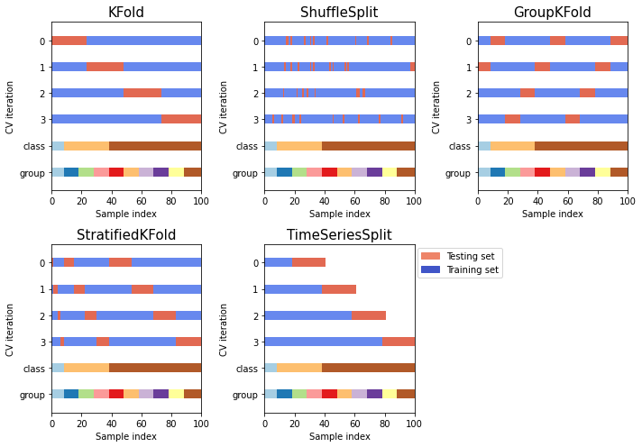
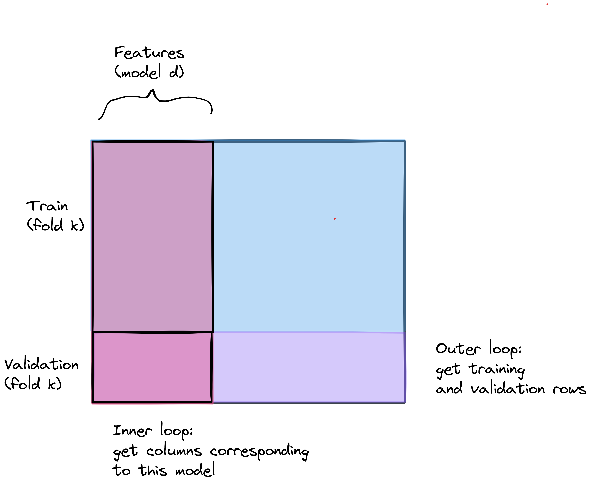
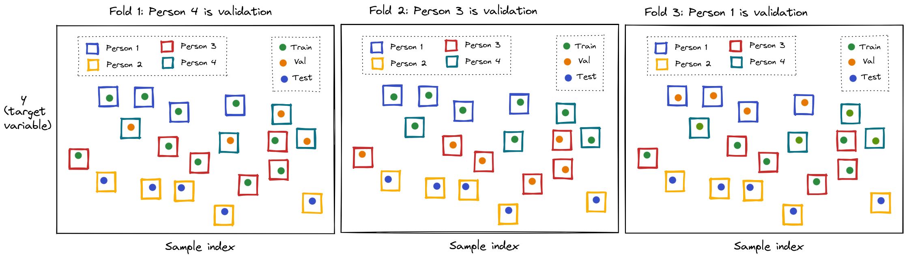
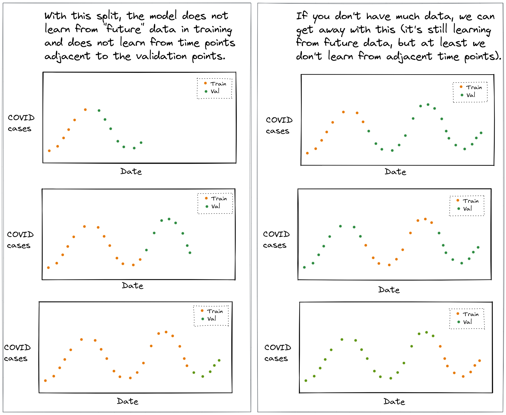

In lecture, we discussed why we need a validation set for model selection, and we saw the K-fold CV algorithm written out in pseudocode. In these notes, we will focus on the code - how to write a K-fold CV loop for model selection, what each part of the loop does, and how to choose the right way to split the data into training and validation sets.
First, we’ll go through each part of a model selection loop in
detail. Then, we’ll see how the same loop is used with four different
“splitters” from scikit-learn:
KFoldGroupKFoldStratifiedKFoldTimeSeriesSplitAll four have the same interface, so the structure of the model selection code is the same for all of them. The difference is which samples end up together in the validation set.
Throughout these notes, we’ll use randomly generated “dummy” data and
a basic LinearRegression model, since we want to focus on
the structure of the code and not on any particular data or model. The
same structure applies to any data and any model.

Recall the K-fold CV algorithm:
Outer loop over folds: for \(i=1\) to \(K\)
Then, find the average score across \(K\) folds for each model, select the model with the best average score, re-fit it on the entire training set, and evaluate it on the test set.
Notice that there are two indices here: \(i\), the fold, and \(p\), the model. Every score \(S_{p,i}\) belongs to one model and one fold. Keeping track of both of these is most of the “work” in writing the code.
We’ll generate some random data, with 100 samples and 5 features:
n_samples = 100
n_features = 5
X = np.random.normal(size=(n_samples, n_features))
y = np.random.normal(size=n_samples)The first thing we do is split off a test set:
X_train, X_test, y_train, y_test = train_test_split(X, y, test_size=0.3, random_state=0)From here until the very end, we will only use X_train
and y_train. The test set is not passed to the K-fold CV at
all - using the test set for model selection is a form of data
leakage.
For our dummy example, the candidate models will all be linear
regressions, but each one uses a different subset of the features
(columns of X). We’ll describe each candidate model by a
list of column indices:
feature_sets = [[0], [0, 1], [0, 1, 2], [1, 3], [0, 1, 2, 3, 4]]
n_models = len(feature_sets)so the first candidate model uses only column 0, the
second uses columns 0 and 1, and so on. The
same idea applies to many model selection problems - for example, a
polynomial model of order \(d\) uses
the first \(d\) columns of a matrix of
polynomial features.
(If instead we were tuning a hyperparameter, like a regularization strength, the list of candidate models would be a list of hyperparameter values. The rest of the loop would be the same, except that we would change the model in each iteration instead of the columns.)
Next, we create a splitter object, which knows how to divide data into folds:
nfold = 5
kf = KFold(n_splits=nfold, shuffle=True, random_state=0)Creating this object doesn’t split anything yet - it just stores the settings (number of folds, whether to shuffle, and the random seed for the shuffle, so that we get the same folds every time we run the code).
split returnsThe splitter object has a split method. We pass it the
training data, and it gives us one item per fold. Each item is a
tuple of two arrays of indices: the indices of the samples in
the training part of this fold, and the indices of the samples in the
validation part of this fold.
for idx in kf.split(X_train):
print(type(idx), len(idx), idx[0].shape, idx[1].shape)<class 'tuple'> 2 (56,) (14,)
<class 'tuple'> 2 (56,) (14,)
<class 'tuple'> 2 (56,) (14,)
<class 'tuple'> 2 (56,) (14,)
<class 'tuple'> 2 (56,) (14,)There are 70 samples in X_train, so in each of the 5
folds, 56 are used for training and 14 for validation. Every sample is
in the validation part of exactly one fold.
A few important things to note:
split returns indices (positions), not the
data itself. We use the indices to select rows of the data -
X_train[idx_tr]. (If the data is in a pandas
data frame, we must use X_train.iloc[idx_tr], because the
indices are positions, not index labels. These are not necessarily the
same - for example, after a call to train_test_split
shuffles the rows.)split - here, positions in X_train, not
in the original X. So we use them to select rows from
X_train and y_train.split doesn’t return a list - it returns a
generator, which produces the folds one at a time as we iterate
over it. So we can’t do kf.split(X_train)[0]. (If we want
only the first fold, for example to inspect it, we can use
next(kf.split(X_train)).)enumerate gives
usTo fill in the score \(S_{p,i}\) we
need to know which fold we are on. The split method gives
us the indices for each fold, but not the fold number. That’s
what enumerate is for: enumerate wraps any
iterable, and in each iteration gives us a tuple of (counter, item),
where the counter starts from 0.
for isplit, idx in enumerate(kf.split(X_train)):
idx_tr, idx_val = idx
print(isplit, idx_tr[:5], idx_val[:5])0 [0 1 2 3 4] [ 7 22 26 27 28]
1 [0 1 5 6 7] [ 2 3 4 11 33]
2 [1 2 3 4 5] [ 0 10 14 18 19]
3 [0 1 2 3 4] [ 5 8 13 15 16]
4 [0 2 3 4 5] [ 1 6 9 12 21](we’re printing only the first 5 indices of each.)
So in each iteration:
isplit is the fold number: 0, 1, …,
nfold-1. We’ll use it to decide where to save the score for
this fold.idx is the tuple returned by split for
this fold, which we “unpack” into idx_tr and
idx_val.We can also unpack the tuple directly in the for
statement, which is equivalent:
for isplit, (idx_tr, idx_val) in enumerate(kf.split(X_train)):
...We use enumerate the same way in the inner loop over
candidate models:
for pidx, cols in enumerate(feature_sets):
...Here, pidx is the model index (0, 1, …,
n_models-1), and cols is the model
itself - the list of columns for this candidate model,
e.g. [1, 3].
It’s important to keep these two separate! We use cols
to build the model (select its columns), and we use
pidx to decide where to save its score. We can’t
use cols as a position in an array, and in general, the
“value” describing a model is not the same as its position in the list.
(Even if the candidate models are numbers - for example, a list of
polynomial orders [1, 2, 3, 5, 10] - the model with order
5 is in position 3, not position
5.)
Before either loop, we create an array of zeros to hold the validation score of every model in every fold:
mse_val = np.zeros((n_models, nfold))The array has one row per candidate model and one column per fold, so
mse_val[pidx, isplit] is the validation score of model
pidx in fold isplit - that is, \(S_{p,i}\). Inside the loops, we fill in one
entry at a time:
mse_val[pidx, isplit] = metrics.mean_squared_error(y_val_fold, y_hat)This is why we need both indices: pidx tells us the row,
and isplit tells us the column.
Some things to note about this array:
mse_val.mean(axis=1) is the mean validation score of each
model (averaging across folds - across columns),
mse_val.std(axis=1) is the standard deviation of each
model’s score across folds (which we need for the one-SE rule), and
mse_val[:, isplit] is the scores of all models in one
fold.If we want to save more than one metric (e.g. MSE and R2), we create one array of zeros per metric.
Any pre-processing step that uses statistics of the data - for
example, standardizing with StandardScaler (which uses the
mean and standard deviation of each column), or filling in missing
values with the mean or median - should be considered part of model
training. So, it must be fitted using only the training part of
the fold, and then applied to both the training part and the validation
part:
for isplit, (idx_tr, idx_val) in enumerate(kf.split(X_train)):
# fit the scaler on the training part of this fold only
scaler = StandardScaler().fit(X_train[idx_tr])
X_tr_fold = scaler.transform(X_train[idx_tr])
X_val_fold = scaler.transform(X_train[idx_val])Why does it go here, inside the loop over folds?
X_train), because then the validation samples in each
fold would have contributed to the mean and standard deviation used to
transform the training samples. The model would have “seen” some
information about the validation data - this is a form of data
leakage.StandardScaler standardizes each column separately, so we
can scale all the columns once per fold, and then select the
columns we need for each model. (If we placed it in the inner loop, we’d
get the same result, but we’d repeat the same computation
n_models times in every fold.)On the other hand, a pre-processing step that does not use statistics of the data - for example, computing \(x^2\) or \(x_1 \times x_2\) from the features, or a log transform - gives the same result for a sample no matter which other samples are in the training set. A step like that can be done once, before the loops.
In the loops, we are always selecting a subset of the data:
nfold times in total.n_models \(\times\) nfold times in
total. # select the rows for this fold (outer loop)
X_tr_fold = scaler.transform(X_train[idx_tr])
X_val_fold = scaler.transform(X_train[idx_val])
y_tr_fold = y_train[idx_tr]
y_val_fold = y_train[idx_val]
for pidx, cols in enumerate(feature_sets):
# select the columns for this model (inner loop)
X_tr_model = X_tr_fold[:, cols]
X_val_model = X_val_fold[:, cols]Because the column selection happens so many times, we want it to be just that - a selection. Anything that can be computed once (outside the loops, or once per fold) should be computed there, so that the inner loop only has to select columns from a matrix that already exists, fit, predict, and score. For example, if the candidate models used different sets of transformed features, we would compute all of the transformed features once before the loops, in one big matrix, and then in each iteration of the inner loop just select the rows and columns we need.

If the candidate models are “nested” (each one uses the first \(p\) columns), the column selection is
X_tr_fold[:, :p]. With a pandas data frame,
select columns by name (X_tr_fold[col_names]) or by
position (X_tr_fold.iloc[:, cols]).
# create a k-fold object
nfold = 5
kf = KFold(n_splits=nfold, shuffle=True, random_state=0)
# candidate models: each one is a list of columns
feature_sets = [[0], [0, 1], [0, 1, 2], [1, 3], [0, 1, 2, 3, 4]]
n_models = len(feature_sets)
# array to hold the validation MSE for each model, in each fold
mse_val = np.zeros((n_models, nfold))
# outer loop: over folds
for isplit, (idx_tr, idx_val) in enumerate(kf.split(X_train)):
# fit the scaler on the training part of this fold only
scaler = StandardScaler().fit(X_train[idx_tr])
# select the rows for this fold
X_tr_fold = scaler.transform(X_train[idx_tr])
X_val_fold = scaler.transform(X_train[idx_val])
y_tr_fold = y_train[idx_tr]
y_val_fold = y_train[idx_val]
# inner loop: over models
for pidx, cols in enumerate(feature_sets):
# select the columns for this model
X_tr_model = X_tr_fold[:, cols]
X_val_model = X_val_fold[:, cols]
# fit model on training data
reg = LinearRegression().fit(X_tr_model, y_tr_fold)
# measure MSE on validation data
y_hat = reg.predict(X_val_model)
mse_val[pidx, isplit] = metrics.mean_squared_error(y_val_fold, y_hat)First, we average across folds and find the index of the best model:
idx_best = np.argmin(mse_val.mean(axis=1))np.argmin returns a position in the array - a model
index, like pidx - so we use it to look up the model itself
in the list of candidate models:
cols_best = feature_sets[idx_best](For a “higher is better” metric like R2, use np.argmax
instead. To use the one-SE rule instead, we would also use
mse_val.std(axis=1).)
Then, we re-fit the selected model on the entire training set. The pre-processing is part of the model, so we re-fit the scaler on the entire training set, too:
scaler = StandardScaler().fit(X_train)
X_train_best = scaler.transform(X_train)[:, cols_best]
reg_best = LinearRegression().fit(X_train_best, y_train)Finally, we evaluate it on the test set, using the scaler that was fitted on the training set:
X_test_best = scaler.transform(X_test)[:, cols_best]
mse_test = metrics.mean_squared_error(y_test, reg_best.predict(X_test_best))Now that we’ve seen all the parts of the loop, we’ll see how the same loop is used with four different splitters. For each one, we’ll look at what it does on a tiny “dataset” with 12 samples, where the value of each sample is equal to its index:
X_tiny = np.arange(12).reshape(-1,1)
strata_tiny = np.array([0, 0, 0, 0, 0, 0, 0, 0, 0, 1, 1, 1])
groups_tiny = np.array([0, 0, 0, 1, 1, 1, 2, 2, 2, 3, 3, 3])Here, strata_tiny is a categorical variable with a
minority category (only three samples have the value 1),
and groups_tiny says which “group” each sample belongs to.
We’ll use strata_tiny and groups_tiny with
some of the splitters below.
Then, we’ll see the dummy model selection loop for each splitter. In
every case, the only things that change are the splitter object and the
arguments passed to split (and, in some cases, how we split
off the test set).
To choose a splitter, think about the task that the model will be asked to do in “production,” and choose a split that makes the validation task mimic it. Otherwise, the validation task may be much easier than the “real” task, and the validation score will be overly optimistic.
KFoldKFold is the “default” choice, when there is no special
structure in the data: the samples are independent of one another, and
the model will be asked to make predictions for new samples that are
like the samples in the training set.
KFold divides the samples into \(K\) consecutive chunks of (approximately)
equal size, and uses each chunk once as the validation set. Without
shuffling, the chunks are taken in order:
kf = KFold(n_splits=3)
for isplit, (idx_tr, idx_val) in enumerate(kf.split(X_tiny)):
print(f"Fold {isplit}: train {idx_tr}, val {idx_val}")Fold 0: train [ 4 5 6 7 8 9 10 11], val [0 1 2 3]
Fold 1: train [ 0 1 2 3 8 9 10 11], val [4 5 6 7]
Fold 2: train [0 1 2 3 4 5 6 7], val [ 8 9 10 11]This is a problem if the data happens to be sorted in some way (for
example, by the target variable), because then the training and
validation sets would not be similar to one another. So, we will almost
always use shuffle=True with KFold:
kf = KFold(n_splits=3, shuffle=True, random_state=0)
for isplit, (idx_tr, idx_val) in enumerate(kf.split(X_tiny)):
print(f"Fold {isplit}: train {idx_tr}, val {idx_val}")Fold 0: train [0 1 2 3 5 7 8 9], val [ 4 6 10 11]
Fold 1: train [ 0 3 4 5 6 9 10 11], val [1 2 7 8]
Fold 2: train [ 1 2 4 6 7 8 10 11], val [0 3 5 9]This is the loop we already wrote above:
X = np.random.normal(size=(n_samples, n_features))
y = np.random.normal(size=n_samples)
X_train, X_test, y_train, y_test = train_test_split(X, y, test_size=0.3, random_state=0)
nfold = 5
kf = KFold(n_splits=nfold, shuffle=True, random_state=0)
feature_sets = [[0], [0, 1], [0, 1, 2], [1, 3], [0, 1, 2, 3, 4]]
n_models = len(feature_sets)
mse_val = np.zeros((n_models, nfold))
for isplit, (idx_tr, idx_val) in enumerate(kf.split(X_train)):
scaler = StandardScaler().fit(X_train[idx_tr])
X_tr_fold = scaler.transform(X_train[idx_tr])
X_val_fold = scaler.transform(X_train[idx_val])
y_tr_fold = y_train[idx_tr]
y_val_fold = y_train[idx_val]
for pidx, cols in enumerate(feature_sets):
reg = LinearRegression().fit(X_tr_fold[:, cols], y_tr_fold)
y_hat = reg.predict(X_val_fold[:, cols])
mse_val[pidx, isplit] = metrics.mean_squared_error(y_val_fold, y_hat)KFold.split only needs X. (It will also
accept y and groups, but it ignores them.)
GroupKFoldUse GroupKFold when the samples are not
independent, because several samples come from the same “group” (for
example, several samples from the same individual), and the
model will be asked to make predictions for new groups that it has not
seen in training.
Samples from the same group are usually more similar to one another than to samples from other groups. If samples from the same group are in both the training set and the validation set, the model can do well on validation just by “recognizing” the group - this is data leakage. The validation task (predict a new sample from a group you have already seen) is easier than the “real” task (predict for a group you have never seen), so the validation score will be overly optimistic, and it may lead us to select a model that “memorizes” groups.

(If, on the other hand, the model will be asked to make
predictions about new samples from the same groups that it was trained
on, then a regular shuffled KFold is OK, since it mimics
the “real” task.)
GroupKFold needs one more piece of information: a
groups array with the same length as the data, which says
which group each sample belongs to. Every sample from a given group will
be placed in the same fold, so a group is always either in the
training set or the validation set, never both.
gkf = GroupKFold(n_splits=4)
for isplit, (idx_tr, idx_val) in enumerate(gkf.split(X_tiny, groups=groups_tiny)):
print(f"Fold {isplit}: train {idx_tr}, val {idx_val}, val groups {np.unique(groups_tiny[idx_val])}")Fold 0: train [0 1 2 3 4 5 6 7 8], val [ 9 10 11], val groups [3]
Fold 1: train [ 0 1 2 3 4 5 9 10 11], val [6 7 8], val groups [2]
Fold 2: train [ 0 1 2 6 7 8 9 10 11], val [3 4 5], val groups [1]
Fold 3: train [ 3 4 5 6 7 8 9 10 11], val [0 1 2], val groups [0]A few things to note:
GroupKFold tries to make the folds as balanced as it
can.GroupKFold does not shuffle - it assigns
groups to folds deterministically. (Recent versions of
scikit-learn also accept shuffle=True and
random_state.)GroupShuffleSplit instead of train_test_split
to split off the test set, otherwise the same group may be in both the
training and test set, and the final evaluation will be overly
optimistic, too.Now, the dummy data also has a groups array. Here, there
are 20 groups with 5 samples each:
X = np.random.normal(size=(n_samples, n_features))
y = np.random.normal(size=n_samples)
groups = np.repeat(np.arange(20), 5)To split off the test set, we use GroupShuffleSplit.
This is also a splitter, so it returns indices - with
n_splits=1, there is only one split, and we use
next to get it:
gss = GroupShuffleSplit(n_splits=1, test_size=0.3, random_state=0)
idx_train, idx_test = next(gss.split(X, y, groups))
X_train, y_train, groups_train = X[idx_train], y[idx_train], groups[idx_train]
X_test, y_test = X[idx_test], y[idx_test]Note that we also keep the groups array for the training
data, since we will pass it to the K-fold CV. Then, the loop is the same
as before, except for the splitter object and the arguments to
split:
nfold = 5
gkf = GroupKFold(n_splits=nfold)
feature_sets = [[0], [0, 1], [0, 1, 2], [1, 3], [0, 1, 2, 3, 4]]
n_models = len(feature_sets)
mse_val = np.zeros((n_models, nfold))
for isplit, (idx_tr, idx_val) in enumerate(gkf.split(X_train, y_train, groups_train)):
scaler = StandardScaler().fit(X_train[idx_tr])
X_tr_fold = scaler.transform(X_train[idx_tr])
X_val_fold = scaler.transform(X_train[idx_val])
y_tr_fold = y_train[idx_tr]
y_val_fold = y_train[idx_val]
for pidx, cols in enumerate(feature_sets):
reg = LinearRegression().fit(X_tr_fold[:, cols], y_tr_fold)
y_hat = reg.predict(X_val_fold[:, cols])
mse_val[pidx, isplit] = metrics.mean_squared_error(y_val_fold, y_hat)GroupKFold.split takes X, y,
and groups (in that order). Since the indices it returns
are positions in X_train, we must pass
groups_train (not groups) so that the
positions line up.
StratifiedKFoldUse StratifiedKFold when there is some category in the
data that has a minority - a value that only a small fraction
of the samples have - and you want to make sure that the minority is
distributed evenly across the folds, so that every fold has
(approximately) the same proportion of each category as the overall
data.
For example, suppose one feature is a categorical variable, and only 10% of the samples are in one of its categories. With a random split, especially when the dataset is small, some validation folds may get very few (or zero!) samples from this minority category, and others may get many more than their “share.” Then:
Note how this is different from GroupKFold: with
GroupKFold, we keep all of the samples from a group
together, in the same fold. With StratifiedKFold,
we spread the samples from each category evenly across
all the folds.
Also note that stratification doesn’t change which task the
model is evaluated on (unlike GroupKFold and
TimeSeriesSplit) - it just makes the folds more similar to
one another and to the overall data.
StratifiedKFold.split takes a second argument (in the
position where the other splitters accept y): an array with
the same length as the data, which says which category each sample
belongs to. We’ll call this array strata.
StratifiedKFold then assigns the samples of each category
to the folds separately, so that each category is spread out evenly
across the folds.
The strata array does not have to be the target variable
- it can be any categorical variable in the data, e.g. one of the
features. Whatever we pass in that position is the variable that the
split will be stratified by. (It must be categorical - each value is
treated as a separate category.)
In our tiny dataset, strata_tiny has a minority category
(1) with only three samples. Here’s how those samples are
distributed across the validation folds with a shuffled
KFold:
kf = KFold(n_splits=3, shuffle=True, random_state=0)
for isplit, (idx_tr, idx_val) in enumerate(kf.split(X_tiny)):
print(f"Fold {isplit}: strata_val {strata_tiny[idx_val]}")Fold 0: strata_val [0 0 1 1]
Fold 1: strata_val [0 0 0 0]
Fold 2: strata_val [0 0 0 1]The second validation fold has no samples from the minority category
at all, and the first has two. With StratifiedKFold:
skf = StratifiedKFold(n_splits=3, shuffle=True, random_state=0)
for isplit, (idx_tr, idx_val) in enumerate(skf.split(X_tiny, strata_tiny)):
print(f"Fold {isplit}: train {idx_tr}, val {idx_val}, strata_val {strata_tiny[idx_val]}")Fold 0: train [ 0 3 4 5 6 8 9 11], val [ 1 2 7 10], strata_val [0 0 0 1]
Fold 1: train [ 0 1 2 4 5 7 9 10], val [ 3 6 8 11], strata_val [0 0 0 1]
Fold 2: train [ 1 2 3 6 7 8 10 11], val [0 4 5 9], strata_val [0 0 0 1]every validation fold has exactly one sample from the minority category (and every training set has two).
Like KFold, StratifiedKFold does not
shuffle by default, so we usually pass shuffle=True. When
we split off the test set, we can similarly stratify with
train_test_split(..., stratify=strata), so that the test
set also has its “share” of the minority.
Now, the dummy data also has a strata array, where about
10% of the samples are in the minority category:
X = np.random.normal(size=(n_samples, n_features))
y = np.random.normal(size=n_samples)
strata = np.random.binomial(1, 0.1, size=n_samples)To split off the test set, we pass strata to
train_test_split twice: once as one of the arrays
to split (so that we get strata_train, which we’ll need for
the K-fold CV), and once as the stratify argument:
X_train, X_test, y_train, y_test, strata_train, strata_test = train_test_split(X, y, strata,
test_size=0.3, stratify=strata, random_state=0)Then, the loop is the same as before, except for the splitter object
and the arguments to split:
nfold = 5
skf = StratifiedKFold(n_splits=nfold, shuffle=True, random_state=0)
feature_sets = [[0], [0, 1], [0, 1, 2], [1, 3], [0, 1, 2, 3, 4]]
n_models = len(feature_sets)
mse_val = np.zeros((n_models, nfold))
for isplit, (idx_tr, idx_val) in enumerate(skf.split(X_train, strata_train)):
scaler = StandardScaler().fit(X_train[idx_tr])
X_tr_fold = scaler.transform(X_train[idx_tr])
X_val_fold = scaler.transform(X_train[idx_val])
y_tr_fold = y_train[idx_tr]
y_val_fold = y_train[idx_val]
for pidx, cols in enumerate(feature_sets):
reg = LinearRegression().fit(X_tr_fold[:, cols], y_tr_fold)
y_hat = reg.predict(X_val_fold[:, cols])
mse_val[pidx, isplit] = metrics.mean_squared_error(y_val_fold, y_hat)StratifiedKFold.split takes X and the
variable to stratify by - here, strata_train (not
y_train!). Since the indices it returns are positions in
X_train, we must pass strata_train (not
strata) so that the positions line up. Everything inside
the loop is unchanged: we still fit the model to predict
y.
TimeSeriesSplitUse TimeSeriesSplit when the data is ordered in time,
and the model will be asked to make predictions about the
future, using a model trained on the past.
If we shuffle time series data, then each validation sample will have training samples immediately before and after it. The model is asked to “fill in the gaps” (interpolate) between training samples - a much easier task than the “real” task of predicting further into the future (extrapolate). The model is also learning from the future, which is information it will not have in production. This is data leakage, and it gives an overly optimistic validation score.

TimeSeriesSplit does not shuffle. It assumes
that the data is already sorted in time order (so sort it first!). In
each fold, the validation set is a chunk of consecutive samples, and the
training set is all of the samples before that chunk. With each
fold, the training set grows:
tscv = TimeSeriesSplit(n_splits=3)
for isplit, (idx_tr, idx_val) in enumerate(tscv.split(X_tiny)):
print(f"Fold {isplit}: train {idx_tr}, val {idx_val}")Fold 0: train [0 1 2], val [3 4 5]
Fold 1: train [0 1 2 3 4 5], val [6 7 8]
Fold 2: train [0 1 2 3 4 5 6 7 8], val [ 9 10 11]Unlike the other splitters, not every sample is used for validation (the first chunk is only ever used for training), and the folds have different numbers of training samples.
There are some useful arguments to control the split:
test_size: the number of samples in each validation
set. Set this to match the “real” task - for example, if the model will
be used to predict the next 10 time steps, use
test_size=10.gap: the number of samples to leave out between the end
of the training set and the start of the validation set. Use this if, in
the “real” task, there is a delay between the most recent data available
for training and the predictions.max_train_size: the maximum number of samples in the
training set. Use this if the model will be trained on a “sliding
window” of recent data, rather than all past data.tscv = TimeSeriesSplit(n_splits=3, test_size=2, gap=1)
for isplit, (idx_tr, idx_val) in enumerate(tscv.split(X_tiny)):
print(f"Fold {isplit}: train {idx_tr}, val {idx_val}")Fold 0: train [0 1 2 3 4], val [6 7]
Fold 1: train [0 1 2 3 4 5 6], val [8 9]
Fold 2: train [0 1 2 3 4 5 6 7 8], val [10 11]The test split must also be chronological: the test set
should be the last part of the data, after all of the training
data. Don’t use train_test_split with its default
shuffle=True. Instead, just slice the data (or use
train_test_split(..., shuffle=False)).
We’ll assume that the rows of the dummy data are already in time order. The test set is the last 30 samples:
X = np.random.normal(size=(n_samples, n_features))
y = np.random.normal(size=n_samples)
# chronological split - test set is the last part of the data
n_train = 70
X_train, y_train = X[:n_train], y[:n_train]
X_test, y_test = X[n_train:], y[n_train:]nfold = 5
tscv = TimeSeriesSplit(n_splits=nfold, test_size=10)
feature_sets = [[0], [0, 1], [0, 1, 2], [1, 3], [0, 1, 2, 3, 4]]
n_models = len(feature_sets)
mse_val = np.zeros((n_models, nfold))
for isplit, (idx_tr, idx_val) in enumerate(tscv.split(X_train)):
scaler = StandardScaler().fit(X_train[idx_tr])
X_tr_fold = scaler.transform(X_train[idx_tr])
X_val_fold = scaler.transform(X_train[idx_val])
y_tr_fold = y_train[idx_tr]
y_val_fold = y_train[idx_val]
for pidx, cols in enumerate(feature_sets):
reg = LinearRegression().fit(X_tr_fold[:, cols], y_tr_fold)
y_hat = reg.predict(X_val_fold[:, cols])
mse_val[pidx, isplit] = metrics.mean_squared_error(y_val_fold, y_hat)TimeSeriesSplit.split only needs X. Note
that the scaler is especially important to fit inside the loop here: if
it were fitted on all of X_train, the training data in each
fold would be scaled using statistics computed partly from
future samples.
| Splitter | Arguments to split |
Shuffles? | Use when… |
|---|---|---|---|
KFold |
X |
only with shuffle=True |
samples are independent, no special structure |
GroupKFold |
X, y, groups |
no (by default) | multiple samples per group, predict for new groups |
StratifiedKFold |
X, strata |
only with shuffle=True |
a minority category should be spread evenly across folds |
TimeSeriesSplit |
X |
never | ordered in time, predict the future |
Some general rules:
split) change.GroupShuffleSplit for group structure,
train_test_split(..., stratify=strata) for stratification,
and a chronological slice for time series.np.zeros((n_models, nfold))) before the loops, fill it in
at [pidx, isplit] inside the loops, and average over
axis=1 afterward.enumerate in both loops, and keep the model index
(pidx) separate from the model itself (cols),
and the fold index (isplit) separate from the indices of
the fold (idx_tr, idx_val).n_models \(\times\) nfold times, so
compute anything that can be computed once outside it.StratifiedGroupKFold keeps groups together and
tries to keep the proportion of each category similar across folds.Finally, all of these splitter objects can be passed as the
cv argument to scikit-learn functions that do
cross validation for you, like cross_val_score,
validation_curve, or GridSearchCV. For
GroupKFold, also pass the groups array:
grid = GridSearchCV(model, param_grid, cv=GroupKFold(n_splits=5))
grid.fit(X_train, y_train, groups=groups_train)Refer to the
scikit-learn documentation on cross validation for more
splitters and examples.